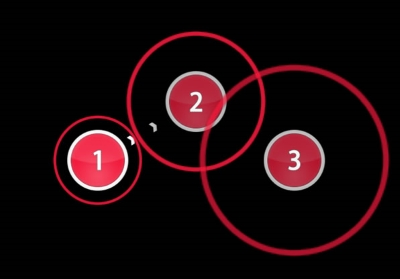
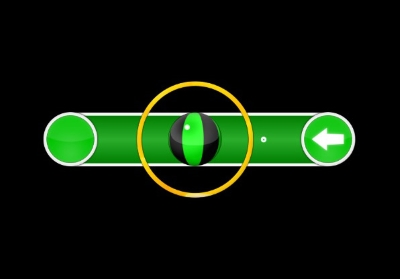
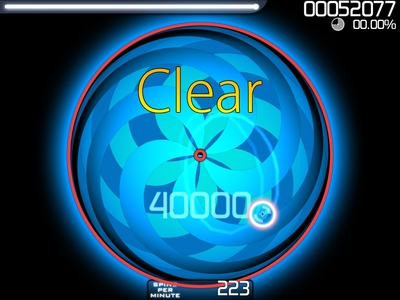

Jocul în sine
osu! este un joc de ritm, adică bazat pe muzică. Are 4 moduri de joc: osu!, osu!taiko, osu!catch și osu!mania.
Muzica jocului nu este aleasă de către echipa de dezvoltare. Dean “peppy/ppy” Herbert, dezvolatorul jocului, a ales ca jocul să fie “self-maintained”, adică comunitatea din jurul jocului să își creeze singur conținutul, singură să își modereze acest conținut, și așa mai departe. peppy și echipa de moderare vin doar în cazuri speciale. Astfel, muzica este în principal origine japoneză sau engleză în mare parte din cazuri. Sunt și alte limbi, chiar și română, dar predominant sunt melodii japoneze. Motivele pentru care japoneză este limba predominantă sunt multe, dar se rezumă la muzica de origine japoneză este, de obicei, mai variată și mai dinamică decât muzica din alte limbi, limba în sine este foarte bună pentru un joc de acest gen, precum și faptul că astfel de jocuri au fost în mare parte de origine japoneză.
Modul de joc osu!
Jocul în sine are în prin-plan trei obiecte pe care trebuie să ducem cursorul mouse-ului și să dăm click (fie cu mouse-ul, fie cu tastatura) în timp cu muzica din fundal: cercul, silder-ul și spinner-ul. Cercul și slider-ul poate lua diferite culori și sunt numerotate în funcție de culoare lor.
Cercul are două componente: cercul propriu-zis și un alt cerc numit “approach circle”. Acest “approach circle” are aceiași culoare ca și cercul principal care îi provine. În timp, acest cerc se aproprie de cercul principal, în funcție de o viteză pre-definită. Ideia este ca noi să-l apăsăm în momentul în care el este mai mult sau mai puțin conectat de cercul principal. Avem o marșă de eroare în care putem da click pe cerc, acesta crescând cu dificultatea jocului.

Silder-ul este similar cu cercul, cu câteva excepții. Cea mai mare și notabilă diferență este faptul că ținem click-ul apăsat pe durata acelui silder, urmărindu-l pe ecran, mai mult sau mai puțin exact.

Spinner-ul este diferit de cel două obiecte. Acest obiect necesită rotirea cursorului la o viteză aceptabilă în timp ce ținem apăsat click-ul.

Toate aceste obiecte oferă un scor când sunt apăsate și ne pot scade sau urca acuratețea. Dacă sunt apăsate corect, jucătorul primește 300 de puncte iar acuratețea sa urcă înapoi spre 100%, ori rămâne la 100%. Altfel, jucătorul primește un scor de 100, 50 sau nimic (spus și miss), acest lucru depinsând cât de aproape de muzică a fost jucătorul. Acureatețea jucătorului scade în monentul în care primește un astfel de scor.
Există o bară de viață. Orice scor oferă viață, înafară de miss. Un miss scade viață. Prea multe miss-uri va rezulta în viața jucătorului să ajungă la zero, moment în care jucătorul pierde controlul, jocul terminându-se brusc.
Aceste obiectele sunt folosite pentru a crea hărți, numite “beatmaps”. Aceste hărți sunt create de către jucători și pot trece printr-un proces de verificare a calității. Dacă au calitatea dorită, aceasta devin “ranked”, adică aceste hărți au un clasament propriu și oferă puncte numite Performance Points sau PP pe scurt. Aceste puncte sunt folosite pentru clasarea jucătorilor pe un clasament global și local pe țara de unde provide jucătorul.
Modificatori
Jocul prezintă modificatori (o să le spun mod/moduri de acum înainte) care alterează orice hartă să fie mai grea sau mai ușoară. Acestea pot să modifice câte puncte PP poate primi jucătorul. Aceste moduri pot fi combinate într-o anumită măsură. Unele moduri anulează alte moduri. O să trec prin câteva astfel de modificări.
Hard Rock: Este o mod ce dorește să crească dificultatea. În principal face acest lucru prin a cresțe viteza obiectelor, marșa de eroare pentru un scor perfect și scade dimensiunea obiectelor. Pentru modul standard de joc, Hard Rock întoarce harta pe axa X, pentru a spori dificultatea.
Easy: Este o mod care face fix invers ce face Hard Rock. Scade viteza obiectelor și marșa de eroare pentru un scor perfect și crește dimensiunea obiectelor. Deși numele este “easy”, este greșit să crezi că o să facă o hartă mai ușoară. Viteza fiind scăzută poate face hărțile cu dificultate ușoare spre mediei mai ușoare, dar pentru hărțile cu dificulate mare, viteza mică va transforma hărțile acelea într-un “iad” de cercuri și slidere. Acest lucru crește ce-a ce numit densitatea hărți.
Double Time: Este un mod care crește viteza melodiei și a obiectelor, precum și marșa de eroare. Este unul dintre cele mai folosit mod.
Half Time: Este modul care scade viteza melodiei și a obiectelor, precum și marșa de eroare Nu este folosit foarte mult, decât pentru hărți care la viteza lor normală sunt considerate imposibile pentru un om.
Hidden: Este un mod visual făcând ca obiectele să apară pentru puțin timp pe ecran, acestea disolvându-se când sunt aproape de-a fi “lovite”. Densitatea și viteza pentru acest mod este un aspect important. Cu densitatea mică și viteza mare, hidden nu crește foarte mult dificultatea, fiind un bonus mai mult sau mai puțin gratuit, făcând acest mod cel mai folosit mod. Dacă avem viteza mică și densitatea mică, hidden crește puțin dificultatea. Dacă avem viteza mică și densitatea mare, hidden crește dificultatea foarte mult.
NoFail: Un mod care elimină viața jucătorului. Nimic mai mult.
Relax: Calculatorul va apasă obiectele pe beat-ul muzici. Jucătorul doar trebuie să miște cursorul.
Auto: Calculatorul joacă harta singur, de la cap la coadă. Pentru toate hărțile făcute pentru jucători, modul Auto va termina harta cu scor perfect, utilizând orice
Demonstrații: